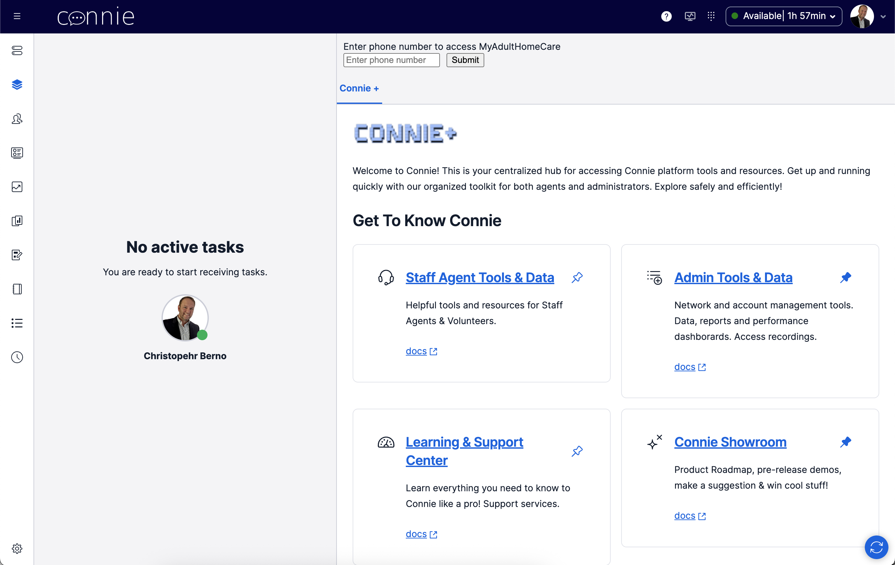
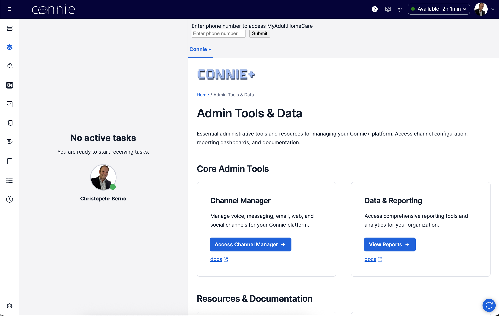
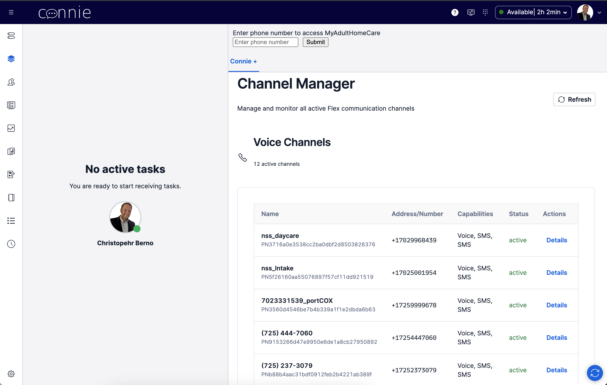
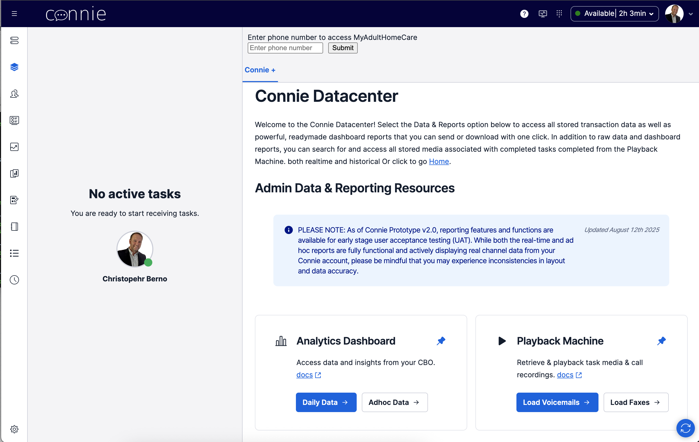
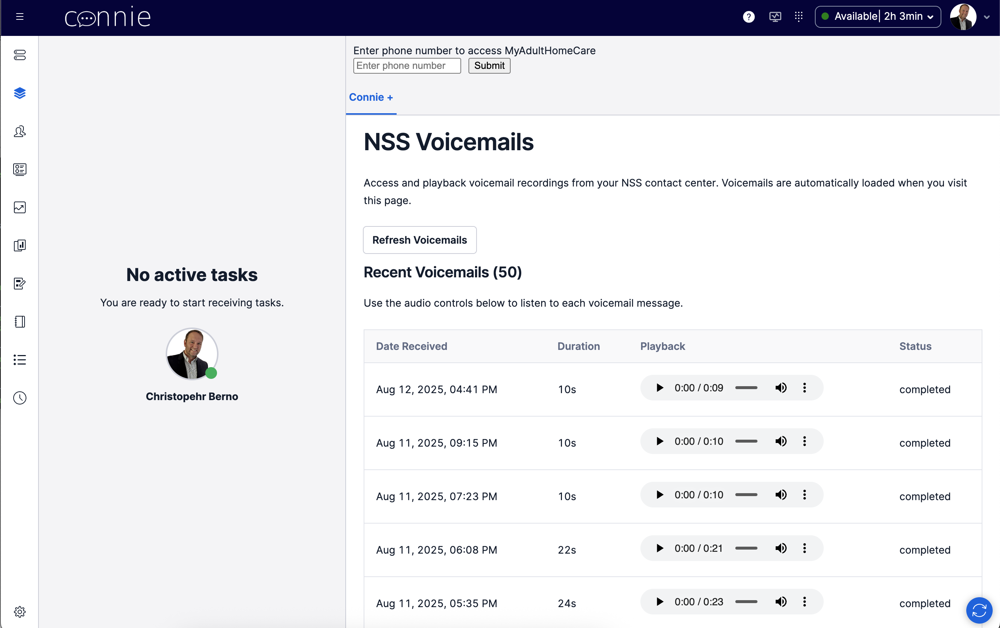
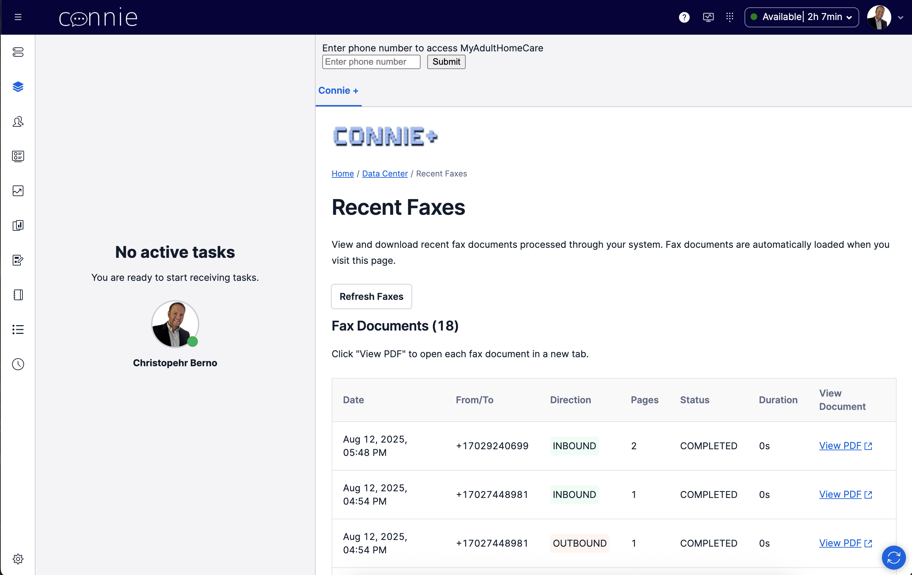
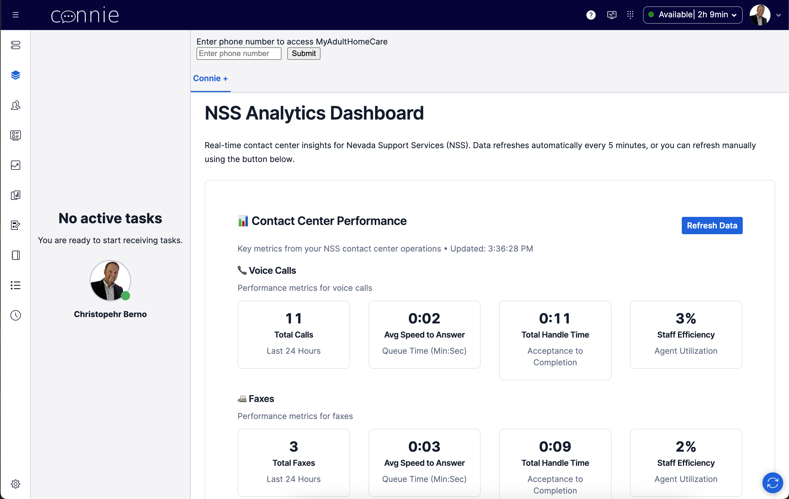

1. START: ConnieRTC Flex View
(Default NSS Environment)

2. Admin Tools & Data Page
(Entry Point)

3A. Channel Manager
(NSS Phone Numbers)

3B. Data Center Hub
(Analytics & Playback)

4A. Voicemail Playback
(Listen to Messages)

4B. Fax Viewer
(View PDF Documents)

4C. NSS Analytics Dashboard
(Live Contact Center Data)

Click "Admin Tools & Data"
PATH A: Access Channel Manager
PATH B: View Reports
Load Voicemails
Load Faxes
Daily Data (Analytics)